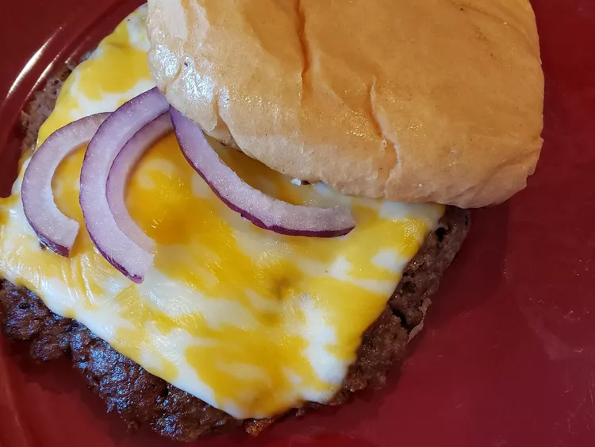

Smash Burgers

Description
Turn your kitchen into a restaurant with these homemade smash burgers!
Fun to make and fun to eat!
Ingredients
- 1 lb. ground beef
- 4 burger buns
- 1 tablespoon butter
- 4 slices cheddar or colby cheese
- 1/2 small red onion
- salt and pepper to taste
Steps
- Divide ground beef into 4 even pieces. Roll each piece into a ball;
refrigerate until needed. Spread cut sides of each hamburger bun with
butter.
- Heat a large cast iron or nonstick skillet over medium-high heat
(you can add a little vegetable oil if worried about sticking).
- Add two hamburger balls to the skillet. Smash meat flat using the
bottom of a small sauce pot or a spatula. Hold in place until seared,
about 1 minute; season with salt and pepper. Cook until a good crust
forms, then flip.
- Once the flip side looks close to being done, cover with cheese slice.
Move the patties aside and place buns, butter side down, in skillet until
toasted. Continue to cook burgers until cheese is melted, meat is no longer
pink in the center, about 5 minutes. An instant-read thermometer inserted
into the center should read at least 160 degrees F (70 degrees C).
- Lay a few onions down on the patty, cover with the top bun and enjoy!